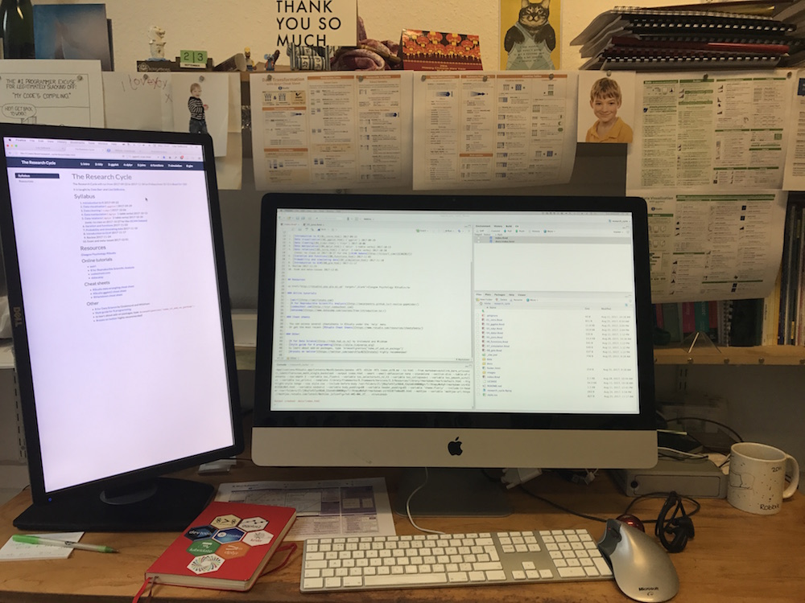

This course provides an overview of the various stages in the life cycle of a research project, with an emphasis on reproducible research and open science using the statistical programming language R. Students will learn about data visualisation, data tidying and wrangling, archiving, iteration and functions, probability and data simulations, and general linear models. Learning is reinforced through weekly assignments that involve working with different types of data.
It will run from 2017-09-22 to 2017-11-24 on Fridays from 10-12 in Boyd Orr 520.
It is taught by Dale Barr and Lisa DeBruine.
This course aims to teach students the basic principles of reproducible research and to provide practical training in data processing and analysis in the statistical programming language R.
By the end of this course students will be able to:
ggplot) 2017-09-29tidyr) 2017-10-06dplyr 1-table verbs) 2017-10-13dplyr 2-table verbs) 2017-10-20Glasgow Psychology RStudio
R for Data Science by Grolemund and Wickham
Help menu All coders use cheat sheets and online resources constantly
browseVignettes("name_of_package") to learn about add-on packages